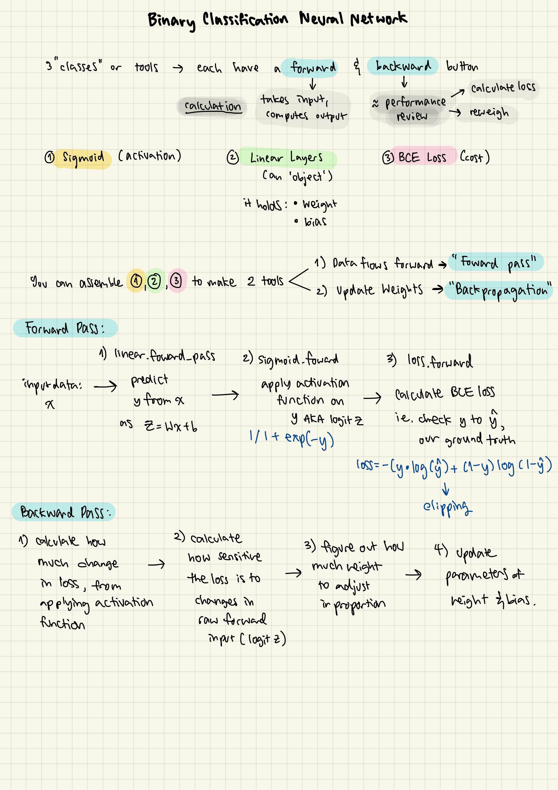

Prim (Maymani) A.
Learning to Assemble a Binary Classification Neural Network from Scratch
Exactly what the title says! I had a number of oddly timed appointments during Spring Break, and so found myself with an unusually large amount of free time.
This is generally the flow of how I worked, after I implemented all the code stubs:
1. Write an explanation of what I think is going on in pseudo code, then try a coded first-pass of what I think the function should do
2. Find (literally everytime) a bug – sometimes it’s a small syntax thing, but most of the time it’s because I forgot to include a small but integral part to the working of the function
3. Keep rewriting the function until I give up (around 3 times)
4. If I keep missing, I’ll give myself a hint – either I have the chatbot look at my code and tell me in English what context I’m missing, but if I’m feeling particularly doomed I’ll directly look at Vedder or Zhiyu’s function. I then carefully write an annotation of what I kept getting wrong/how to make it cleaner/etc.
So I’m not so much building the neural network than I am just assembling it. My process is more akin to following a Lego instruction manual, hence the title. I like to think I’d try doing a second pass sometime in the future where I code it fully from scratch (because that’s a nice thing to say – there’s so little time). Regardless, if we agree with Richard Feynman’s quote “What I cannot create, I do not understand”, trying to build it may help me begin to understand it.
A Visualization of the Forward-Pass & Backpropagation, Made As Simple As I Can

That step of writing legitimately concise self-explanations actually took up the longest time, and is actually what I think made me learn so much from this exercise.
-----
Developing intuition and appreciating things
For my machine learning class, the class is structured loosely around this week-style of schedule: one theory-heavy lecture, one ‘hands-on’ vibe-coding lecture, and a ‘build it from scratch’ lab. Assembling this simple neural network was meant to mimic a more complete and independent iteration of those lab exercises.
I think the hardest part about learning something like the theory behind machine learning is how many moving parts there are. Assuming you have strong mathematical foundations (I do not), you must next tackle the issue of orienting your thought-train around a lot of moving components, and it seems like the only way to get used to seeing how those components are related and why they are designed, chosen, or assembled in such a way is to spend a lot of time looking at how they work up close, and in many different directions. It’s a lot like building a stair. A lot of this might seem obvious, and I feel a bit silly writing this down. The reason this feels so profound to me is because I can’t remember the last time I spent 8-10 hours (rough estimate for this exercise) thinking about one single topic, and unrelentingly ironing out as much confusion – no matter how trivial or stupid it sounded – about it.
A small voice is telling me that I’ve basically re-discovered what it means to review a subject, and sure, maybe. I think due to time constraints, I’ve basically relegated my studying process to lecture notes (first pass of information) → many reviews (filtering of all the points I’ve missed) → exam review (try to get everything in your head). It’s a decent system and has worked for me so far, but I feel that developing comfortability around a topic i.e. building intuition/maturity is something that gets less prioritized in this studying pipeline. At the very least, I feel not enough of it is retained in the long-term for me.
I still feel that I’m not being clear. It’s not that I’m unable to learn content, but I don’t think I have built the flexibility to truly play with its rules. In the past, questions that deviated too far from course structures would often send me into a panic, and they didn’t have to be hard questions, just ones I hadn’t thought too much about. Attempting to answer those questions required straining through complex logic, or torturously sifting through figures and formulas. I could not understand how people – more embarrassingly if they were my peers – were able to answer hard questions on the fly, or simply look at an equation and know what was going on. It was like they were all fluent in this language I could only speak broken sentences of. Am I just too stupid for this?
I hope not, but seeing as how fun this exercise legitimately was, I am reminded that I don’t have to be smart to appreciate simple complexity.